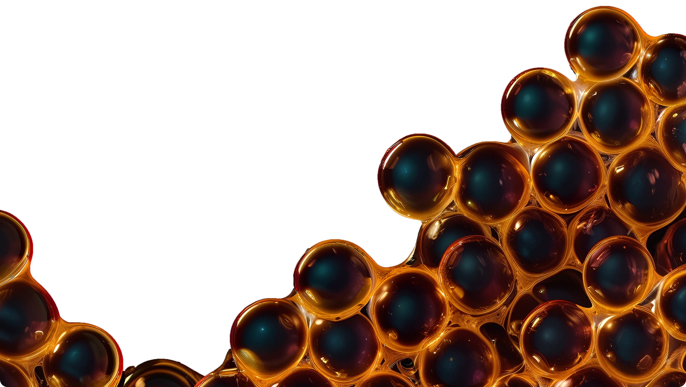

<section class="popular">
    <div class="container">
        <div class="popular__body">
            
            <div class="popular__body-text">
                <h2>Популярный напиток из Тайваня - Bubble Tea</h2>
                <p>* На основе чая, молока, фруктовых сиропов и различных топпингов – тапиоки и фруктовых джус-боллов</p>
            </div>
            <div class="popular__body-caption">
                <div class="popular__body-caption-top">
                    <span>Появление напитка Bubble Tea в России</span>
                    <svg width="20" height="20" viewBox="0 0 20 20" fill="none" xmlns="http://www.w3.org/2000/svg">
                        <path d="M20 10H10M0 10H10M10 10V0V20" stroke="#F9F9F9" stroke-width="3" />
                    </svg>
                </div>
                <p class="popular__body-caption-bot">
                    В 2011 году продукт начал активно завоевывать Европейский
                    и Американский рынок – был виден тренд на увеличение спроса
                    и возрастающую популярность Bubble Tea среди молодежи.
                    <br><br>
                    <span>В том же году, будущие основатели Bubble Mania отправились на остров Тайвань, где посетили
                        важнейших
                        производителей компонентов для чайных коктейлей Bubble Tea и производителей оборудования для
                        комплектации чайных станций.</span>
                    <br><br>
                    Перепробовав всё что было возможно и пройдя обучение
                    у известного мастера, были подписаны контракты на поставку оборудования и самых лучших ингредиентов.
                    <br><br>
                    <span>Благодаря полученным знаниям мы разработали оригинальные технологические карты для BUBBLE
                        MANIA.</span>
                </p>
            </div>
        </div>
    </div>
</section>